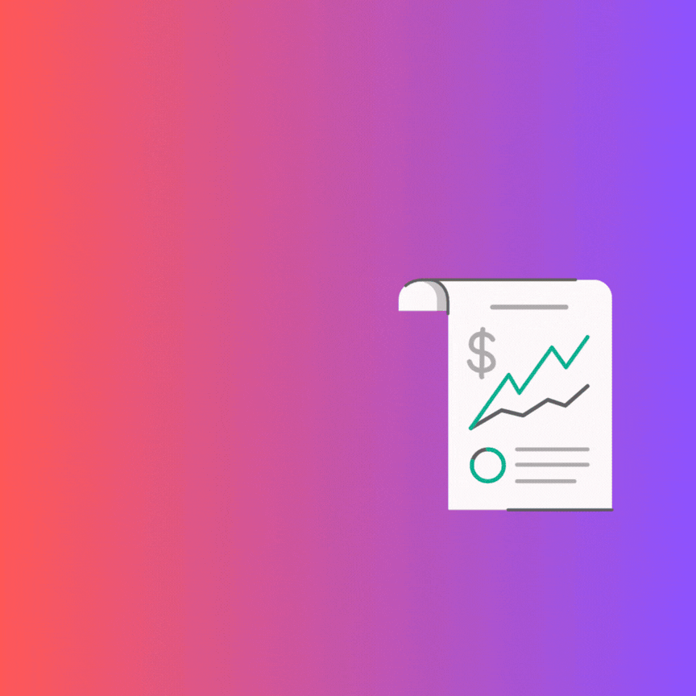
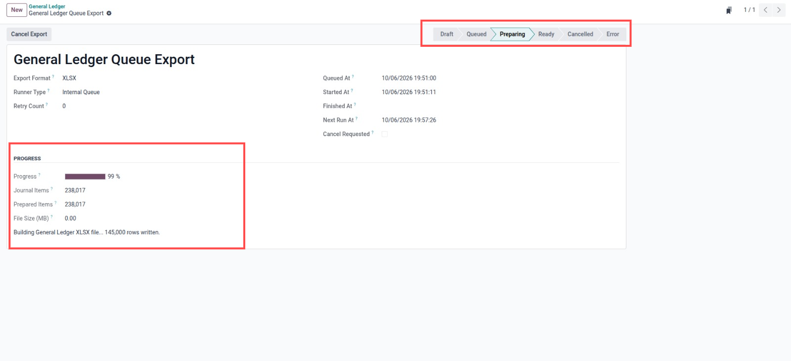
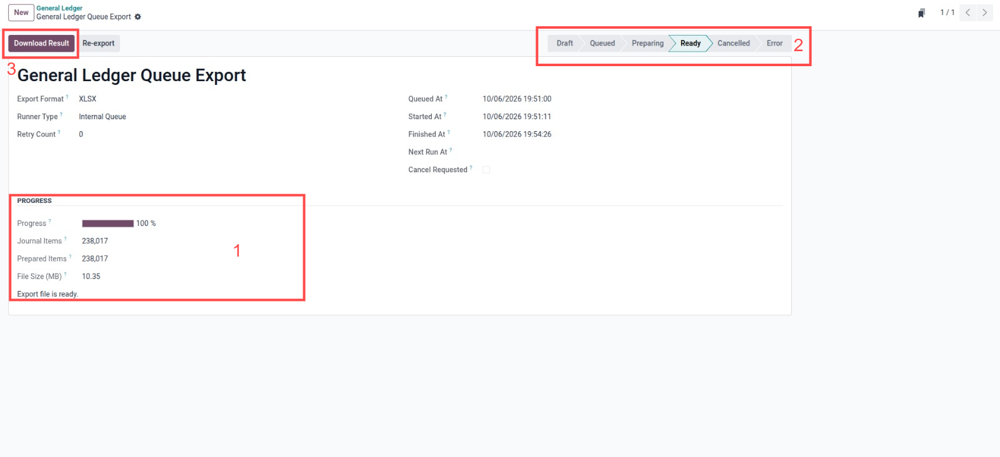

Export large Odoo General Ledger XLSX reports in the background without browser timeout. Users can keep working while the queue prepares the file, then download the ready result.

Large General Ledger XLSX exports are detected and redirected to a background job.
Track prepared journal items, progress, file size, retry state, and queue status from one form.
The XLSX file keeps the native Odoo General Ledger report structure and formatting.
Queue large General Ledger exports and download the prepared XLSX file after background processing finishes.

